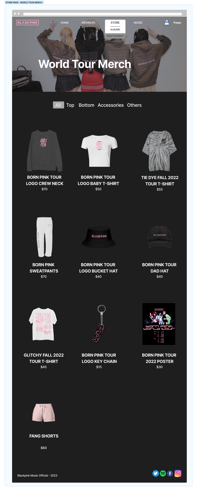

Flowchat Diagram
a diagram to structure and to acknowlegde the flow
of each page easily so it able to
offer the
bigger picture of the process.
Tool for creating the flowchart diagram is using Figma.

Wireframe
a hard sketch blueprint for better visual to know
how the site will look like before
creating the prototype of the website.
Tool for designing the wireframe is using Balsamiq.
Prototype
The finishing result of designing the Blackpink Music Website.
Responsive image gallery
-

-

-

-

- 
-

-

-

-